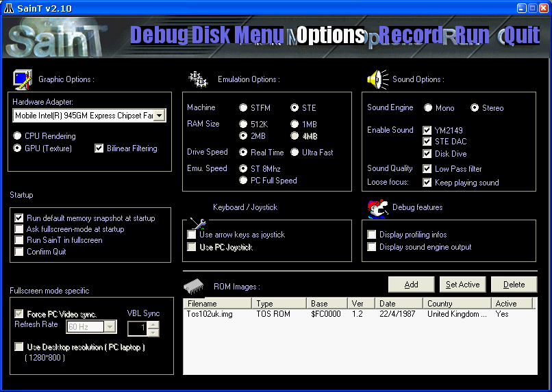

Options
NOTE: Fine tuning these options require a minimum of technical skill. If you're a newbie and just want to play game, just don't modify anything and keep the standard settings, it should work. If you're an emulator warrior or just a bit curious, here if a brief desscription of each options:
Just click on the "Options" logo at top of the screen, and you should get that page:

- Hardware adpter :If you have more than one graphics card, you select the right one.
- CPU rendering: Normal (render a normal ST screen), Half (render one scanline on two, that's the fastest mode), Interlace (as fast as Half mode, it's a good choice for slow machine running SainT in windowed mode), Blend (or TV mode: scanline are displayed with half brightness)
- GPU rendering: SainT is DirectX8.1 native, so it supports rendering using polygones and texture. You can encounter some slowdown using that mode, because of the DirectX8.1 new DYNAMIC_TEXTURE is not supported by any driver yet. If it runs fast on your config, you can use the "Bilinear filtering" checkbox to see a nice effect, wich is a unique feature of SainT in ATARI-ST emulator world :-)
- Fullscreen specific: when running in fullscreen mode, SainT can sync himself to the refresh rate of your video adapter. ("Force PC video sync"). That's the only way to get "smooth" scroller for demos. The only drawback is that you may not be synced to the original ATARI frequency (50Hz). If you're a lucky 100Hz PC mode owner, just set "frame skip" to 1 and you get a smooth 50Hz fullscreen mode !
- Run default memory snapshot: When you quit SainT, a memory shot is automaticlly saved. If you activate that option, SainT try to load and run the latest memory shot at startup.
- Ask fullscreen: If you activate that checkbox, SainT will ask you if you want fullscreen or windowed version each time you run it.
- Run in fullscreen: Force SainT in fullscreen mode at beginning.
- STF/STE: SainT emulates both STF or STF machine. Just know STE mode is quite buggy, so always prefer the STF mode for a better compatibility.
- RAM size: Set it to 1Mb to get the best compatibility with games or demos.
- Drive speed: SainT emulate the exact speed of a real ATARI floppy drive. Better set it to "real speed" so you can hear another SainT unique feature: the real sound of your floppy drive loading data !
- Use arrow keys as joystick: If checked, your PC arrow keys control the ST joystick, if not it controls the standard ST arrow.
- Use PC joystick: If the option is greyed then you don't have any real PC connected (or installed). Select that options if you want to play your fave game using your new PC joystick !
- YM2149: That's the main ATARI sound chip. You have to check it if you want to hear anything from your ATARI !
- STE DAC: The additional STE soundchip. Greyed if you're in STF mode.
- Disk drive: SainT unique feature: activate it and you hear a real floppy drive sound !

SainT
1998-2002 Written by James Boulton and Arnaud Carré